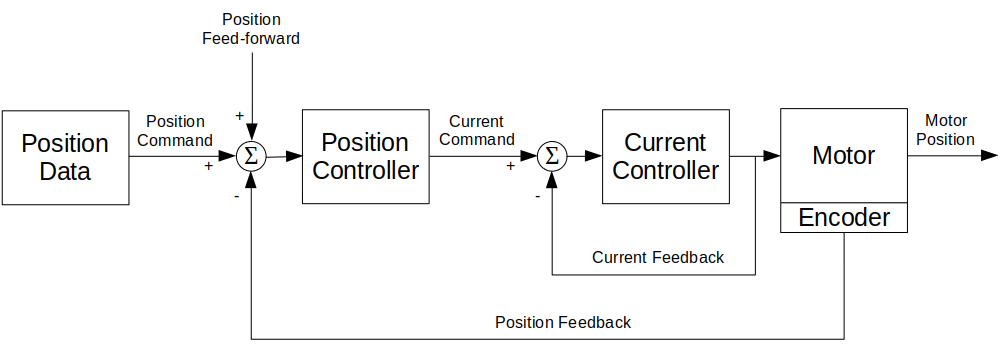
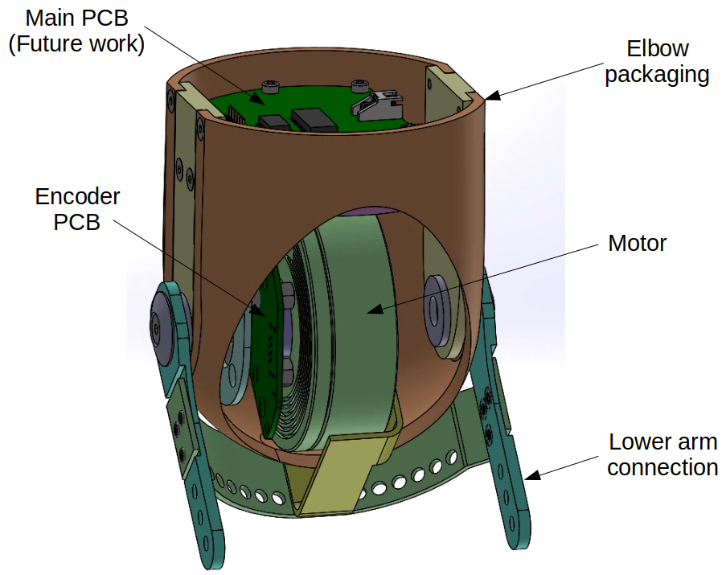
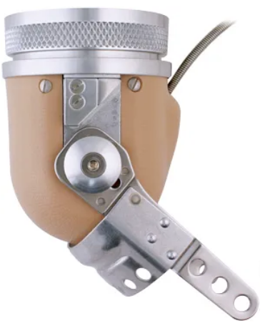

Motorized Prosthetic Arm
Python | C | Biomechanics | Human Movement Analysis | Mechatronics | PID Control
April 2020 - December 2021
Description
In this project, I designed, built, and controlled a motorized prosthetic elbow that imitates healthy arm motion to help amputees prevent falling,
avoid injuries, and maintain balance while walking.
I analyzed arm movement data patterns and simulated full arm dynamics, to achieve better arm-motion predictions.
Take a look at the project on my GitHub page.

Motorized prosthetic elbow
System Overview
This project contained 3 parts:
- Data collection
- Arm motion analysis and modeling
- Motor control to achieve the desired arm motion
- Mechanical design of the prosthetic elbow
Data collection

Accelerometer sensors - back, shoulder, and elbow accelerations
Modeling a human arm as a double pendulum
To Better understand the motion of a human arm and find a suitable motor to imitate the elbow motion, I modeled the arm as a double pendulum system. I used the system Lagrangian and measured shoulder and elbow angles to find the motion equations and extract the required elbow torque.
The double pendulum can be described using the following system sketch, where the masses are located in the center of mass of every link:

Modeling the arm as a double pendulum - system sketch
The kinetic and potential energy of the system is as follows: $$ KE = \frac{1}{2} \cdot m_1 \cdot (\dot{x_1}^2 + \dot{y_1}^2) + \frac{1}{2} \cdot m_2 \cdot (\dot{x_2}^2 + \dot{y_2}^2) $$ $$ PE = m_1 \cdot g \cdot y1 + m_2 \cdot g \cdot y_2 $$ where $m_1$ and $m_2$ are the masses of the upper arm and the forearm (respectively), $R_1$ and $R_2$ are the distance from the joint to the center of mass of the upper arm and the forearm (respectively), $g$ is the gravity constant, and: $$ x_1 = R_1 \cdot sin(\theta_1) $$ $$ y_1 = -R_1 \cdot cos(\theta_1) $$ $$ x_2 = R_1 \cdot sin(\theta_1) + R_2 \cdot sin(\theta_1 + \theta_2) $$ $$ y_2 = -R_1 \cdot cos(\theta_1) - R_2 \cdot cos(\theta_1 + \theta_2) $$
The Lagrangian is the difference between the two energies: $$ L(t) = KE - PE $$
The Euler-Lagrange equation, the connection between the joints torque to the joints angles, can be computed using the following equation: $$ \tau_i(t) = \biggl(\frac{\partial L}{\partial \theta_i'}\biggr)' - \frac{\partial L}{\partial \theta_i} $$ where $i$ is the joint number.
Plugging in the measured angles returns the torque as a function of time. After scanning the maximum torque and velocity over all trials, I could find the maximum requirements for the motor.
The following video shows an animation of the arm motion, represented as a double pendulum:
Modeling the arm as a double pendulum - system animation
Motor control
To control the motor, I used a 2 layer control system - feedback current and position control. The current was controlled by the ODrive's controller, and the position was controlled by a feedback PID controller.
The control system diadram:

Control system diagram
The PID position control diadram:

PID controller diagram
An example of motor position control using the PID controller. The blue plot is the input angles, the red plot is the controlled output angles and the second graph is the error changing with time:

Position control input (blue), output (red), and position error
After tunning the controller, I reached the goal of maximum error of 5% from the maximum angle.
Mechanical design

The mechanical design of the device
The mechanical design is based on the design of the FILLAUER's E-400 prosthetic elbow:

FILLAUER's E-400 prosthetic elbow
Future Work
...